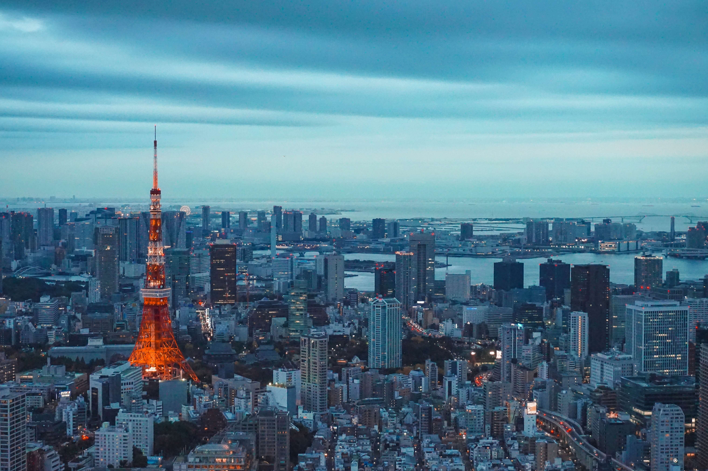
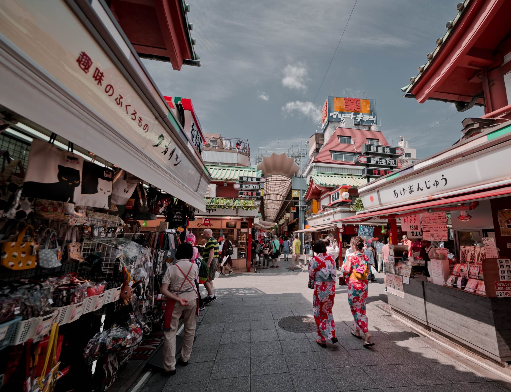

Tokyo?
Tokyo (東京, Tōkyō) is Japan's capital and the world's most populous metropolis.

It offers a seemingly unlimited choice of shopping, entertainment, culture and dining to its visitors. The city's history can be appreciated in districts such as Asakusa and in many excellent museums, historic temples and gardens. Contrary to common perception, Tokyo also offers a number of attractive green spaces in the city center and within relatively short train rides at its outskirts.

There are lots of worthy places to visit in Tokyo, where you get know about the Japanese culture. I have listed out some of the places for you to get around in Tokyo.